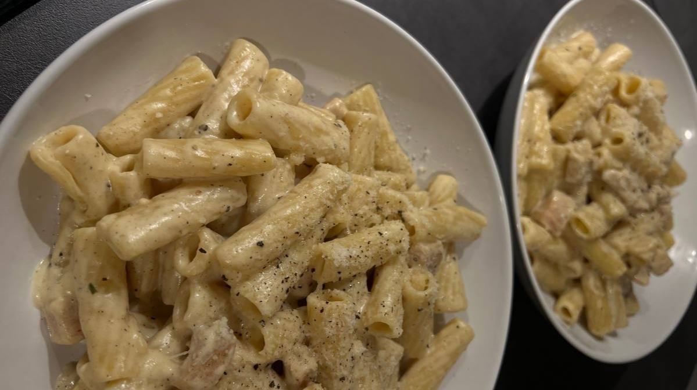

Welcome to Razma's kitchen
Here, every recipe is more than just food. It’s an experience, a journey of flavors, memories, and love. Join me in crafting dishes that tell stories _ because cooking isn't just a skill, it’s magic waiting to unfold. Ready to taste the secrets?.
Spaghetti Carbonara
Spaghetti Bolognese, a classic Italian dish that never goes wrong. Rich and savory meat sauce with tomatoes and Parmesan cheese, making every bite irresistible.
Featured Categories
- Desserts
- Vegan
- Quick Meals
- Healty
- Comfort Food
- International